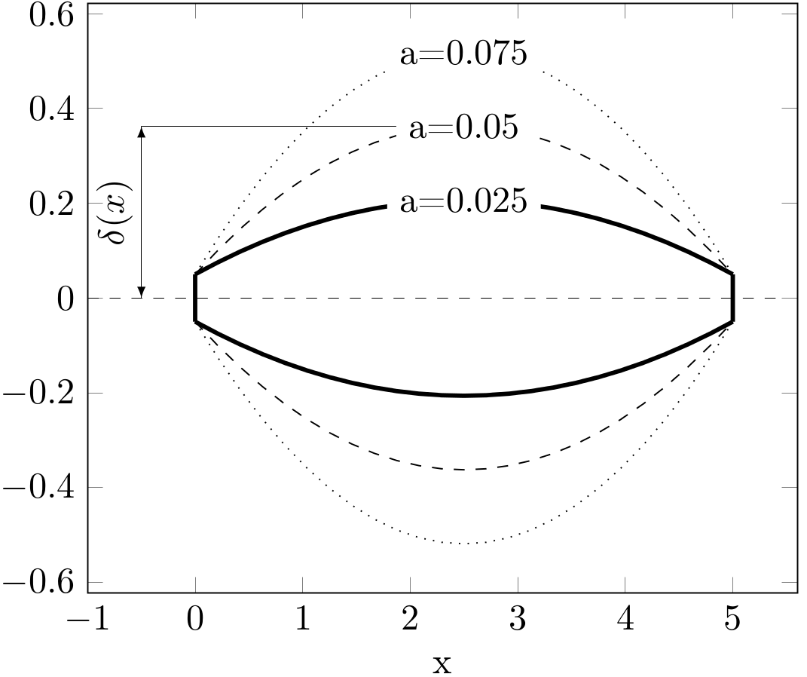

Zadania treningowe
Wstęp
Jako materiał pomocniczy do zadań można skorzystać z plików:
W tych plikach znajdują się zebrane wszystkie funkcje numeryczne implementujące poznane przez nas metody. Dodatkowo zamieszczona zosatła tam funkcja rysuj_wykres która rysuje wykres na podstawie przekazanych tablic x oraz y. Narzędzia z tych plików mogą Państwo dołączyć do projektu i dodać dyrektywę #include "narzedzia.h" lub tylko przekopiować odpowiednie funkcje wprost do pliku roboczego main.cpp.
Zadania od 1-5 są zadaniami z zakresu materiału dotyczącego 3 pierwszych ćwiczeń laboratoryjnych.
Zadanie 1
Samolot lecący na pewnej wysokości został uszkodzony i uległ wypadkowi. Większość systemów sterowania i narzędzi pomiarowych przestało działać. Jedyne co udało się zarejestrować to przeciążenia działające na samolot w zależności od położenia i wysokości nad ziemią:
\[\vec{a} = [a_x(x,y), a_y(x,y)]\]
Oprócz przebiegu przeciążeń udało się także zarejestrować prędkość \(V=V_0\) w momencie uszkodzenia oraz wysokości na jakiej znajdował się samolot w czasie spadania: \[y=f(x)\]
Ponieważ nic więcej nie udało się zarejestrować komisja badająca wypadek nie potrafi wyznaczyć prędkości z jaką samolot uderzył w ziemię. Twoim zadaniem jest im pomóc i wyznaczyć prędkość wiedząc, że zarejestrowane przeciążenie to: \[\vec{a} = \left[10^{-2} \cdot (0.8+sin(x \cdot 10^{-2}), 10 \cdot (0.8+sin(y)) \right] \left[\frac{m}{s^2}\right]\] Masa samolotu to \[m=50 \cdot 10^3\] wysokość samolotu w funkcji położenia: \[y=-10^3 \cdot (\frac{x}{10^4}-4.91318) \cdot sin(\frac{x}{10^4}-4.91318) [m]\] a prędkość na początku awarii: \[v(x=0)=85 [\frac{m}{s}]\]
Zadanie 2
Pan Janusz wymyślił sobie, że ogrodzi działkę od strony północnej na kształt sinusoidy. Jako, że nie uczęszczał na zajęcia z informatyki 2 to nie potrafi sam obliczyć jaką długość siatki powinien on zakupić w sklepie. Wymiary działki są następujące:

Górną krawędź opisuje funkcja \[2 \cdot sin(\frac{x}{10})\] gdzie \(x=0\) odpowiada lewemu bokowi. Pomóż Panu Januszowi i oblicz ile metrów siatki potrzebuje aby ogrodzić swoją działkę.
Zadanie 3
Zamieszczony mechanizm na rysunku poniżej składa się z dwóch członów połączonych między sobą, z ziemią i szyną na górze parami obrotowymi.

Mechanizm ten ma 1 stopień swobody(można jedynie przesuwać górny punkt wzdłuż linii kreskowej). Górna końcówka przemieszcza się w czasie zgodnie z następującym równaniem: \[ x = 2 \cdot sin(t) + 2 \] Wymiary mechanizmu to: \[ h = 10 \\ l_1 = 5 \\ l_2 = 8 \] Wyznacz zależność kąta α od czasu dla 10 różnych chwil czasowych: \(t = 0, 0.5, 1, 1.5, ..., 4.5\). Następnie dokonaj interpolacji z otrzymanych punktów i przedstaw na wykresie zależność: \[ \alpha = \alpha(t) \] wykorzystując 100 punktów, których wartości powinny pochodzić z zastosowania interpolacji metodą wielomianową.
Dla zainteresowanych
Wykonaj animację ruchu mechanizmu korzystając z biblioteki graficznej, funkcji animate oraz funkcji clear (funkcja animate wstrzymuje działanie programu na pewną chwilę, a funkcja clear czyści okno). Za pomocą tych funkcji można napisać prostą animację w następujący sposób:
Zadanie 4 (typu kolokwialnego)
Masz zadaną funkcję zmiennej \(x\) która zawiera dodatkowy parametr \(a\): \[ f(x) = - x \cdot sinh(x) + a \]
Wersja podstawowa zadania
Znajdź 2 miejsca zerowe powyższej funkcji dla parametru \(a=1\).
Oblicz całkę z zadanej funkcji dla parametru \(a=1\) i w granicach od pierwszego miejsca zerowego do drugiego \([x_{01}; x_{02}]\)
Wyświetlić obliczone miejsca zerowe i całkę z dokładnością do 3 miejsc po przecinku.
Wersja zaawansowana zadania
Zmodyfikuj funkcję obliczającą miejsca zerowe oraz funkcję całkującą tak, aby przyjmowała wskaźnik do funkcji dwuargumentowej (typu
double funkcja(double x, double a)) oraz dodatkowy parametr typudouble a.
Uwaga Należy pamiętać aby wewnątrz odpowiedniej funkcji podczas wywołania przekazanej funkcji wykorzystać także dodany parametra.Znajdź 2 miejsca zerowe przedstawionej na początku funkcji dla zakresu parametrów \(a=1,2,\dots, 10\).
Dla parametrów \(a=1,2,\dots, 10\) oblicz całkę w granicach pomiędzy pomiędzy pierwszym a drugim pierwiastkiem (\([x_{01}; x_{02}]\), wyznaczonymi w poprzednim podpunkcie) odpowiednim dla poszczególnych wartości parametru \(a\).
Zapisz poszczególne wartości parametru \(a\) oraz obliczone wartości całki w dwóch oddzielnych tablicach.
Dokonaj interpolacji funkcji \(Całka=f(a)\) metodą wielomianową i przedstaw wynik w punktach: \(a=1, 1.1, 1.2, \dots, 9.9, 10\) na wykresie wykorzystując bibliotekę graficzną.
Mała podpowiedź: Pierwiastki równania \(−x \cdot sinh(x) + a\) dla \(a=1, \dots, 10\) to liczby z zakresów: \[ x_{01} = [-0.5, -2.5] \\ x_{01} = [0.5, 2.5] \]
Zadanie 5
Zarejestrowano prędkość poruszającego się samochodu w przedziale czasu \(t \in <0, 3>\) sekund. Okazało się, że prędkość tą opisuje następująca funkcja: \[ \newcommand{\tmax}{3} \newcommand{\seekdistance}{5} \newcommand{\rhsfunction}{sin(t) \cdot cosh(t)} \newcommand{\rhsfunctionlong}{sin(t) \cdot \frac{e^t+e^{-t}}{2}} \newcommand{\rhsfunctionlongTau}{sin(\tau) \cdot \frac{e^\tau+e^{-\tau}}{2}} v(t) = \rhsfunction = \rhsfunctionlong \quad [\frac{m}{s}] \]
Twoim zadaniem jest znalezienie takiej wartości czasu \(t\) po której samochód przejedzie \(\seekdistance[m]\). W celu rozwiązania tego problemu musisz skorzystać z metod poznanych na poprzednich zajęciach:
- całkowania numerycznego,
- interpolacji wielomianowej,
- rozwiązywania równań nieliniowych.
Mała podpowiedź: Aby rozwiązać to zadanie należy rozwiązać równanie nieliniowe \[x(t)-5=0\] Funkcja \(x(t)\) powinna być określona za pomocą wielomianu interpolacyjnego rozpiętego na punktach \((t_i, x_i)\) wyznczonych za pomocą całek: \[ x_i = \int_0^{t_i} \rhsfunctionlongTau d\tau \] gdzie wartości \(t_i\) powinny być punktami z przedziału \(t\in<0,3>\).
Zadanie 6
Grubość belki \(h\) o przekroju kwadratowym w zależności od położenia \(x\) opisują następujące funkcje: \[ \newcommand{\grubosc}{0.1} \newcommand{\dlugosc}{5} \newcommand{\aOne}{0.025} \newcommand{\aTwo}{0.05} \newcommand{\aThree}{0.075} \newcommand{\mGnacySkala}{1000000} \newcommand{\mGnacySkalaText}{10^6} h(x) = 2\cdot \delta(x) [m] \]
\[ \delta(x) = \mathbf{a} \cdot (l - x) \cdot x + \frac{\delta_0}{2} [m] \]
gdzie \(\mathbf{a}\) jest parametrem funkcji i może zmieniać się w zakresie \(<0, 0.1>\). \(\delta_0\) jest minimalną grubością równą \(0.1 [m]\).

Belka jest obciążona w taki sposób, że moment gnący opisuje poniższa funkcja: \[ M(x) = \mGnacySkalaText \cdot sinh(\frac{x}{l}) \cdot sin(\frac{x\cdot \pi}{l}) [N \cdot m] \] gdzie długość belki \(l = 5\). Twoim zadaniem jest znalezienie optymalnej wartości parametru \(\mathbf{a}\) dla którego maksymalna wartość naprężenia w belce, pod zadanym obciążeniem, będzie równe \(\sigma_{max} = 200 [MPa]\). Maksymalne naprężenie w dowolnym przekroju to: \[ \sigma(x) = \frac{M(x)}{W_x(x)} \] gdzie \(W_x\) to wskaźnik wytrzymałości, który dla belki o przekroju kwadratowym jest równy: \[ W_x(x) = \frac{h(x)^3}{6} \]
W celu rozwiązania tego zadania należy wykorzystać poznane metody:
- Interpolacji wielomianowej,
- Rozwiązywania równań nieliniowych.
Podpowiedzi do zadań
Poniżej zamieszczamy znaczące podopiedzi pokazujące jak należy rozwiązać powyższe zadania. Zanim z nich skorzystasz spróbuj własnych sił. Zadania są tak skonstruowane abyś przećwiczył samodzielne definiowanie problemu oraz rozwiązywanie go za pomocą metod numerycznych poznanych na zajęciach.
Zadanie 1
Rozwiązanie tego zadania polega na skorzystaniu z zasady zachowania energii. Znamy prędkość początkową, znamy tor ruchu oraz znamy przeciążenie. Za pomocą przeciążenia możemy obliczyć siłę wypadkową działającą na samolot. Czyli znamy tor i siłę, a zatem możemy obliczyć pracę sił wypadkowych. Podsumowując możemy napisać: \[E_0 = \frac{m\cdot v_0^2}{2}\] \[ W = \int_{x_0}^{x_1}{\vec{F}(x,y(x)) \cdot \vec{ds}} \] a \(y\) mamy z danych zadania: \[y=-10^3 \cdot (\frac{x}{10^4}-4.91318) \cdot sin(\frac{x}{10^4}-4.91318)\] \[ E_k = E_0 + W \quad \to \quad v_k = \sqrt{2 (\frac{mv_0^2}{2} + \int_{x_0}^{x_1}{\vec{F}\cdot \vec{ds}})} \] Pozostaje obliczyć całkę z iloczynu skalarnego. W tym wypadku jedyne rzeczy których nie znamy to \(\vec{ds}\) i \(\vec{F}\). Jeśli znamy krzywą po której porusza się samolot to wektor przyrostu drogi to nic innego jak: \[ \vec{ds} = \left[dx, y'dx\right]\] gdzie \(y'\) to pochodna która jest równa: \[ \frac{dy}{dx} = -0.1 \cdot ( sin(\frac{x}{10^4}-4.91318) + (\frac{x}{10^4} - 4.91318) \cdot cos(\frac{x}{10^4} - 4.91318) ) \]
Z kolei siła to: \[ \vec{F} = m \cdot \vec{a} = m \cdot \left[10^{-2} \cdot (0.8+sin(x \cdot 10^{-2}), 10 \cdot (0.8+sin(y)) \right] \left[\frac{m}{s^2}\right] \] Ostatecznie całka którą należy obliczyć to: \[ \begin{aligned} m\cdot \int_{x_0}^{x_1} \vec{a} \cdot \vec{ds} = m\cdot \int_{x_0}^{x_1} [1, y'] \cdot \left[10^{-2} \cdot (0.8+sin(x \cdot 10^{-2}), 10 \cdot (0.8+sin(y)) \right] dx \end{aligned} \]
Jedyna rzecz której nie posiadamy to koniec przedziału całkowania. Jak wiemy końcem będzie moment zderzenia samolotu z ziemią, czyli y=0 . Ponieważ równanie to jest nieliniowe, to wypada skorzystać w tym miejscu z jakiejś metody do rozwiązywania równań nieliniowych. Jak będziemy znali ten ostatni parametr to pozostaje scałkować numerycznie (np. metodą trapezów) pracę i można obliczyć ostatecznie wartość prędkości.
Schemat rozwiązania:
Przygotuj funkcję obliczającą wysokość w zależności od \(x\) \[y(x)=-10^3 \cdot (\frac{x}{10^4}-4.91318) \cdot sin(\frac{x}{10^4}-4.91318)\]
Rozwiąż równianie nieliniowe(metodą bisekcji/siecznych/stycznych) i znajdź współrzędną \(x\) zderzenia (warunek \(y=0\)). Rozwiązanie widać od razu w równaniu \(x = 49131.8\), lecz zaleca się przetestowanie działania różnych metod, poniweważ \(y(x)=0\) ma wiele miejsc zerowych, a my jesteśmy zainteresowani tylko tym najbliższym 0 i dodatnim.
Przygotuj funkcję obliczającą pochodną \(\frac{dy}{dx}\) (możesz ją zastosować także do metody newtona).
Przygotuj funkcję obliczającą funkcję podcałkową określającą pracę sił wypadkowych (skorzystaj z funkcji z pkt. 3).
Oblicz całkę stosując metodę trapezów lub simpsona.
Oblicz energię kinetyczną początkową.
Oblicz ostateczną wartość prędkości.
Zadanie 2
To zadanie jest mniej złożone niż poprzednie. W zasadzie sprowadza się jedynie do obliczenia całki z długości łuku krzywej opisanej za pomocą funkcji \(y=f(x)\). W przypadku tak prostej funkcji elementarna długość łuku to: \[ ds = \sqrt{f'(x)^2 + 1} dx\] W związku z tym długość łuku to: \[ \int_{x_0}^{x_1}{ds} = \int_{x_0}^{x_1}{\sqrt{f'(x)^2 + 1} dx} \] Po podstawieniu funkcji opisującej północne ogrodzenie dostaniemy: \[ \int_{x_0}^{x_1}{\sqrt{(0.5\cdot cos(\frac{x}{10}))^2 + 1} dx} \]
Zatem schemat rozwiązania zadania będzie następujący:
Przygotuj funkcję podcałkową.
Wykonaj całkowanie znaną Ci metodą.
Oblicz końcową długość ogrodzenia.
Znajdź w internecie cenę ogrodzenia w kształcie kota.
Oblicz cenę końcową ogrodzenia.
Wystaw fakturę Panu Januszowi za wykorzystanie magicznych umiejętności całkowania dowolnej funkcji :-)
Zadanie 3
Przyjmijmy, że dolny punkt znajduje się w punkcie \([0,0]\). Wtedy możemy napisać 2 równania opisujące ten mechanizm: \[ x_1^2 + y_1^2 = l_1^2 \quad \to \quad y_1 = \sqrt{l_1^2 - x_1^2}, \quad ponieważ \quad y_1 > 0 \\ (x_2 − x_1)^2 +(h − y_1)^2 =l_2^2 \] a po podstawieniu (\(x_2\) wynika z danych): \[ (2 \cdot sin(t) + 2 − x_1)^2 +(h − \sqrt{l_1^2 - x_1^2} )^2 =l_2^2 \]
Mamy zatem jedno równanie nieliniowe opisujące ruch dolnej korby mechanizmu, gdzie niewiadoma to \(x_1\). Czas w tym równaniu występuje tylko jako parametr, który będzie się zmieniał co zadany krok przy kolejnych rozwiązaniach tego równania. W związku z tym najwygodniej bedzie czas zadeklarować jako zmienną globalną, tak aby nie trzeba było modyfikować funkcji znajdujących się w plikach narzedzia.h i narzedzia.cpp. Pozostaje rozwiązać to równanie wykorzystując np. metodę siecznych.
Schemat rozwiązania:
Utwórz tablice do przechowywania 11 czasów oraz 11 kątów \(\alpha\)
Utwórz pętlę w której będziesz zmieniał czas od \(t=0, \dots, 4.5\) co \(0.5\)
W pętli wywołaj metodę bisekcji/siecznych/stycznych aby znaleźć rozwiązanie równania opisującego współrzędną \(x_1\) . Oblicz następnie współrzędną \(y_1\).
Mając wsp. \(x_1\) , \(y_1\) oblicz kąt \(\alpha\) używając np.: funkcji \(atan(x)\) i zapisz w tablicy nową chwilę czasową oraz nowy kąt \(\alpha\).
Otwórz nową pętlę która będzie iterowała od \(0, \dots, 99\). Następnie używając funkcji „lagrange” dokonaj interpolacji kata \(\alpha\) dla chwil czasowych \(0.00, 0.05, 0.1, 0.15 , \dots, 4.5\). Dla każdej chwili czasowej narysuj na wykresie punkt o współrzędnych \(\left[t_i , \alpha_(t_i )\right]\)
Zadanie 5
Aby znaleźć czas dla którego przebyta odległość jest równa \(\seekdistance[m]\) należy znaleźć zależność: \[ x = x(t) \qquad gdzie \quad t \in <0,\tmax> \]
Znając ją można następnie ułożyć równanie: \[ x(t) - \seekdistance = 0 \]
którego rozwiązaniem będzie poszukiwany czas \(t\).
Skąd zatem wziąć funkcję \(x = x(t)\)? Należy skorzystać ze informacji jaką niesie prędkość pojazdu. Biorąc pod uwagę równanie określające prędkość można sformułować następujące zagadnienie:
\[ \begin{align*} &\frac{dx}{dt} = \rhsfunction \\ &x|_{t=0} = 0 \\ &t \in <0, \tmax> \end{align*} \]
Powyższy problem to nic innego jak poszukiwanie całki nieoznaczonej funkcji \(\frac{dx}{dt}=v(t)\). Ale jak to zrobić za pomocą poznanych narzędzi? Otóż należy połączyć 2 metody - całkowanie numeryczne oraz interpolację. Poznane metody całkowania pozwalają wyznaczyć całkę oznaczoną postaci:
\[ C = \int_a^b f(\tau)d\tau \]
Z kolei całka nieoznaczona to w praktyce funkcja określona jako:
\[ F(t) = \int_{t_0}^t f(\tau)d\tau \]
Co w naszym przypadku sprowadza się do:
\[ x(t) = \int_0^t v(\tau)d\tau=\int_0^t \rhsfunctionlongTau d\tau \]
Z racji tego, że poznane przez nas metody pozwalają na obliczenie całki z funkcji na konkretnym przedziale to musimy wykonać pewne przybliżenie, które będzie polegało na obliczeniu wartości funkcji \(x(t)\) w skończonej liczbie punktów, czyli:
\[ x_0=x(0), x_1=x(h), x_2=x(2 \cdot h), \dots , x_{N-1}=x((N-1)\cdot h = 3)\]
a następnie na dokonaniu interpolacji za pomocą wielomianów Lagrange’a tak, aby przybliżenie funkcji \(x=x(t)\) przechodziło przez wyznaczone punkty \((t_i, x_i)\).
Podsumowując algorytm rozwiązania problemu będzie następujący:
- Oblicz szereg całek \(\int_0^t v(\tau) d\tau\) aby wyznaczyć wartości \(x_i\).
- Przygotuj funkcję która będzie potrafiła zwrócić wartość \(x=x(t)\) dla dowolnego parametru \(t\) wykorzystując “pod spodem” interpolację wielomianową.
- Wykorzystaj funkcję z poprzedniego punktu aby rozwiązać równanie \(x=x(t)\) wybraną metodą i znaleźć poszukiwany czas \(t\).
Krok 1
Oblicz \(N\) poniższych całek dowolnie wybraną metodą numeryczną: \[ x_i = \int_{0}^{t_i} \rhsfunctionlongTau dt \] gdzie: \[ t_i=i \cdot h, \quad h=\frac{\tmax}{N-1}, \quad i=0, 1, \dots, N-1 \] Wartości całek zapisz w tablicy X a wartości czasów dla których całki są obliczone w tablicy T (tablice mogą być zadeklarowana statycznie). \(N\) wybierz dowolne, na początek możesz zacząć od \(N=10\).
Krok 2
Utwórz funkcję “polozenia” która będzie przyjmowała jako argument jedną (dowolną) liczbę \(t\) i zwracała wartość położenia wykorzystując interpolację wielomianową i wartości \(x_i\) obliczone dla czasów \(t=0, h, 2h, \dots\) w poprzednim zadaniu.
Uwaga Tablice do przechowywania całek i czasów zadeklaruj jako zmienne globalne (najlepiej przed wszystkimi funkcjami) tak aby z poziomu funkcji obliczającej wartości funkcji \(x=x(t)\) mieć do nich dostęp.
Krok 3
Wykorzystaj znaną Ci metodę rozwiązywania równań nieliniowych i znajdź rozwiązanie równania: \[ x(t) - \seekdistance = 0 \]
Pierwiastek tego równania znajduje się w przedziale \(0-3\). Sprawdź jak rozwiązanie zmienia się wraz ze zmianą \(N\) z zadania 1.
Zadanie 6
Aby rozwiązać ten problem należy znaleźć funkcję która będzie przedstawiała zależność największego naprężenia w belce od parametru \(\mathbf{a}\): \[ \sigma_{max} = \sigma_{max}(\mathbf{a}) \]
a następnie należy znaleźć takie \(\mathbf{a}\) dla którego zachodzi: \[ \sigma_{max}(\mathbf{a}) = 200 \cdot 10^6 \] czyli należy rozwiązać równanie nieliniowe. Pozostaje znalezienie nieznanej funkcji \(\sigma_{max}(\mathbf{a})\). Funkcja ta opisuje wartość największego naprężenia w całej belce. A zatem, zanim je obliczymy należy znaleźć taki przekrój \(x\) dla którego wartość \(\sigma\) osiągnie największą wartość - czyli należy znaleźć miejsce w którym pierwsza pochodna \(\sigma\) jest równa 0: \[ \frac{d\sigma}{dx} = 0 \qquad \Rightarrow \qquad \frac{d}{dx} \left(\frac{M(x)}{W_x(x)}\right) = 0 \]
a po podstawieniu \(W_x = \frac{h(x)^3}{6}\) i zróżniczkowaniu otrzymamy: \[ \begin{align} \frac{d\sigma}{dx} &= \frac{3}{4} \cdot \frac{M' \delta - 3 \cdot M \delta'}{\delta^4}\\ M' &= \frac{1}{l} \left(cosh(\frac{x}{l})sin(x\cdot\frac{\pi}{x}) + \pi sinh(\frac{x}{l})cos(x\cdot\frac{\pi}{x})\right)\\ \delta' &= a \cdot (l - 2 \cdot x) \end{align} \]
Znając przekrój można wyznaczyć wartość \(\sigma_{max}(\mathbf{a})\). Trudno jest jednak wygenerować pary \((\mathbf{a}, \sigma_{max})\) dla wszystkich dopuszczalnych wartości parametru \(\mathbf{a}\). Dlatego należy wykonać powyższe obliczenia dla pewnego zbioru konkretnych wartości tego parametru, np. \(\mathbf{a} = 0, 0.01, ..., 0.1\), a następnie dokonać interpolacji funkcji \(\sigma_{max}=\sigma_{max}(\mathbf{a})\) za pomocą wielomianów Lagrange’a. Ostatecznie, posiadając wymaganą funkcję w postaci interpolacji, pozostaje rozwiązać równanie \(\frac{d\sigma}{dx} = 0\).
Krok 1
Przygotuj zestaw danych opisujących parametry w zadaniu (zadeklaruj wszystkie zmienne jako globalne, nawet zmienną przechowującą parametr \(\mathbf{a}\)). Następnie przygotuj funkcje obliczające poniższe wyrażenia:
- \(M(x)\)
- \(\frac{dM}{dx}(x)\)
- \(\delta (x)\)
- \(\frac{d \delta}{dx} (x)\)
- \(W_x(x)\)
- \(\sigma(x)\)
- \(\frac{d \sigma} {dx} (x)\)
Krok 2
Dodaj do zmiennych globalnych tablice zadeklarowane statycznie o rozmiarze \(N=10\), które posłużą do przechowywania zbioru założonych parametrów \(\mathbf{a}\) oraz wartości \(\sigma_{max}\) obliczonych dla \(x\) odpowiadającego największemu naprężeniu. Następnie w funkcji “main” uzupełnij te tablice obliczając wartość \(\sigma_{max}=\sigma(x_{max})\) po uprzednim rozwiązaniu równania dla kolejnych wartości parametru \(\mathbf{a}\) z zakresu \(<0, 0.1>\)
Uwaga Pamiętaj, że wszystkie funkcje z zadania pierwszego są oparte o globalny parametr \(\mathbf{a}\), dlatego musisz zadbać o jego poprawną wartość w trakcie obliczania kolejnych \(\sigma_{max}\)
Krok 3
Wykorzystaj tablice wyznaczone w poprzednim zadaniu i przygotuj funkcję
która dokona interpolacji wielomianowej funkcji \(\sigma_{max}(\mathbf{a})\) i zwróci wartość obliczoną dla dowolnego \(a\).
Krok 4
Rozwiąż równanie wykorzystując funkcję z poprzedniego zadania. W wyniku otrzymasz optymalną wartość parametru \(\mathbf{a}\). Dla tej wartości parametru utwórz wykres funkcji \(\sigma = \sigma(x)\) wykorzystując bibliotekę graficzną.
Rozwiązania zadań
Zadanie 1
#include <math.h>
#include <stdio.h>
#include "narzedzia.h"
const double m = 5e4, v0 = 85;
double y(double x)
{
return -1e3*(x/1e4 - 4.91318)*sin(x/1e4 - 4.91318);
}
double dydx(double x)
{
return -0.1*( sin(x/1e4-4.91318) + (x/1e4 - 4.91318)*cos(x/1e4 - 4.91318) );
}
double dWdx(double x)
{
double F[] = { -m*(sin(x/1e2)+0.8)/1e2, - m*10*(0.8+sin(y(x))) };
double ds[] = {1, dydx(x)};
return F[0]*ds[0] + F[1]*ds[1];
}
int main()
{
int iter;
double x0 = styczna(4e4,y, dydx, 1e-4, &iter);
printf("x0=%e\ty(x0)=%e\tNiter=%d\n", x0, y(x0),iter);
double praca = trapez(0, x0, dWdx, 1e3);
double E0 = m*v0*v0/2;
printf("praca=%e\tE0=%e\n", praca, E0);
double v = sqrt( 2*( E0 + praca )/m );
printf("v=%e\n", v);
return 0;
}Zadanie 2
Zadanie 3
#define _CRTP_USE_SECURE_NO_WARNINGS
#include <math.h>
#include <stdio.h>
#include "narzedzia.h"
#include "winbgi2.h"
double time=0;
const double h = 10;
const double l1 = 5;
const double l2 = 8;
const int N = 10;
const int M = 100;
double equation(double x1)
{
return pow(2*sin(time) + 2 - x1, 2) + pow(h - sqrt( l1*l1-x1*x1 ), 2) - l2*l2;
}
const double pi = 4.*atan(1.);
double degree(double radian)
{
return 180. / pi* radian;
}
int main()
{
graphics(1000, 1000);
setbkcolor(WHITE);
//Set black color for frame drawing
setgray(0.);
scale(0, 0, 5, 60);
title("time", "angle", "alpha(t)");
//Solution
double alpha[N];
double times[N];
int itr;
double dt = 5./(N-1);
double xs=0;
double xe=5;
double x1 = 0;
setlinestyle(0, 1, 2);
for(int i=0; i<N; ++i)
{
x1 = bisec(0, 5, equation, 1e-3, &itr);
double y1 = sqrt(l1*l1 - x1*x1);
alpha[i] = atan(y1/x1);
times[i] = time;
time += dt;
circle(times[i], degree(alpha[i]), 5);
}
//Interpolation
double alpha2[M];
double times2[M];
dt = 5./(M-1);
time = 0;
setcolor(0.9);
for(int i=0; i<M; ++i)
{
alpha2[i] = lagrange(times, alpha, N, time);
times2[i] = time;
time += dt;
if (i > 0)
{
line(times2[i-1], degree(alpha2[i-1]), times2[i], degree(alpha2[i]));
}
}
wait();
//Animate mechanism
for (int i = 0; i < M && animate(15); ++i)
{
clear();
setgray(0.);
setlinestyle(0, 1, 1);
scale(-3, 0, 10, 10);
//draw 2 parts of mechanism
setgray(0.5);
setlinestyle(0, 1, 5);
line(0, 0, l1*cos(alpha2[i]), l1*sin(alpha2[i]));
line(l1*cos(alpha2[i]), l1*sin(alpha2[i]), 5 * sin(times2[i]) + 2, h);
//Draw the guide
setcolor(0.9);
setlinestyle(1, 1, 1);
line(-3, h, 10, h);
}
wait();
}Zadanie 4
#define _CRT_SECURE_NO_WARNINGS
#include <math.h>
#include <stdio.h>
#include "narzedzia.h"
#include "winbgi2.h"
double trapezParam(double a, double b, double parameter, double(*fun)(double, double), int n)
{
int i;
double h=(b-a)/(n-1), calka=0, x1, x2;
for(i=0; i<n-1; ++i)
{
x1 = a + i*h;
x2 = a + (i+1)*h;
calka += ( fun(x1, parameter) + fun(x2, parameter) )/2 * h;
}
return calka;
}
double stycznaParam(double x0, double parameter, double(*fun)(double, double), double(*poch)(double, double), double eps, int *n_iter)
{
double deltaX=1;
*n_iter = 0;
while(fabs(fun(x0, parameter)) > eps && fabs(deltaX) > eps)
{
deltaX = - fun(x0, parameter)/poch(x0, parameter);
x0 = x0 + deltaX;
(*n_iter)++;
if(*n_iter > 1e3)
{
*n_iter=-1;
return x0;
}
}
return x0;
}
double funkcja(double x, double a)
{
return -x*sinh(x) + a;
}
double pochodna(double x, double a)
{
return -sinh(x) - x*cosh(x);
}
int main()
{
const int N = 10;
const int M = 100;
double x01[N], x02[N], C[N], parametry[N];
int iter;
for(int i=0; i<N; ++i)
{
parametry[i] = i+1;
x01[i] = stycznaParam(-1, i+1, funkcja, pochodna, 1e-4, &iter);
x02[i] = stycznaParam(1, i+1, funkcja, pochodna, 1e-4, &iter);
C[i] = trapezParam(x01[i], x02[i], i+1, funkcja, 100);
}
graphics(1000, 1000);
//Ustaw kolor tla na bialy i czcionki na czarny
setbkcolor(WHITE);
setgray(0);
scale(0, 0, 10, 40);
double da = 9. / (M - 1);
double a = 1;
for (int i = 0; i<M; ++i, a += da)
{
//Zinterpoluj wynik
double ci = lagrange(parametry, C, N, a);
circle(a, ci, 3);
}
wait();
return 0;
}Zadanie 5
#include <stdlib.h>
#include <stdio.h>
#include <math.h>
#include "narzedzia.h"
const int N=10;
double T[N];
double X[N];
double predkosc(double t)
{
return sin(t)*(exp(t)+exp(-t))/2;
}
double polozenia(double t)
{
return lagrange(T, X, N, t);
}
double rownanie(double t)
{
return polozenia(t) - 5;
}
int main()
{
double h = 3./(N);
X[0]=0;
for(int i=1; i<N; ++i)
{
X[i] = trapez(0, i*h, predkosc, 10);
T[i] = i*h;
}
int itr;
double t0 = bisec(0, 3, rownanie, 1e-4, &itr);
printf("Polozenie 5m zostaje osiagniete po %e sekundach\nIter=%d\n", t0, itr);
return 0;
}Zadanie 6
#define _CRT_SECURE_NO_WARNINGS
#include <stdio.h>
#include <stdlib.h>
#include <math.h>
#include "winbgi2.h"
#include "narzedzia.h"
double a=0;
const double aMax = 0.1;
const double delta0 = 0.1;
const double l = 5;
const double pi = 4*atan(1.);
const double Mmag = 1e6;
const int N=50;
double sigmaMax[N];
double parA[N];
double M(double x)
{
return Mmag * sinh(x/l)*sin(x*pi/l);
}
double dM(double x)
{
return Mmag * (cosh(x/l)*sin(x*pi/l) + pi* sinh(x/l)*cos(x*pi/l))/l;
}
double delta(double x)
{
return a*(l-x)*x + delta0/2;
}
double dDelta(double x)
{
return a*(l - 2*x);
}
double Wx(double x)
{
return 4./3*pow(delta(x),3);
}
double sigma(double x)
{
return M(x)/Wx(x);
}
double dSigmadx(double x)
{
return 3./4 * (dM(x)*delta(x) - 3*M(x)*dDelta(x)) / pow(delta(x),4);
}
double interpSigmaMax(double a)
{
return lagrange(parA, sigmaMax, N, a);
}
double equation(double a)
{
return interpSigmaMax(a) - 200*1e6;
}
int main()
{
int iter;
double da = aMax / (N - 1);
double x_sigmaMax;
a = 0;
for(int i=0; i<N; ++i)
{
//Find x for maximal stress
x_sigmaMax = bisec(0, l, dSigmadx, 1e-4, &iter);
//Assign stress and parameter into tables
parA[i] = a;
sigmaMax[i] = sigma(x_sigmaMax);
//increase a parameter
a+=da;
}
// Calculate optimal a
double a_opt = bisec(0, aMax, equation, 1e-4, &iter);
//Display results and find for a_opt corresponding x_max and value of sigma_max
a = a_opt;
x_sigmaMax = bisec(0, l, dSigmadx, 1e-4, &iter);
printf("Optymalna wartosc a=%e\t dla ktorego sigma max(%.3lf)=%e\n", a_opt, x_sigmaMax, M(x_sigmaMax)/Wx(x_sigmaMax), iter);
//Plot stress for optimal a
graphics(1000, 1000);
setbkcolor(WHITE); //change background to white
setgray(0.); //change foreground to black
scale(0, 0, l, 250);
int M = 200;
double dx = l / (M-1);
for(int i=0; i<M; ++i)
{
double x = dx*i;
circle(x, sigma(x)/1e6, 3);
}
//Draw reference lines
setlinestyle(1, 1, 1);
setcolor(0.9);
line(0, 200, x_sigmaMax, 200);
line(x_sigmaMax, 0, x_sigmaMax, 200);
//Format and add title:
setgray(0);
char * titleStr= (char*)malloc(50 * sizeof(char));
sprintf(titleStr, "Naprezenia dla a=%.3lf", a);
title( "x", "sigma[MPa]", titleStr);
wait();
return 0;
}